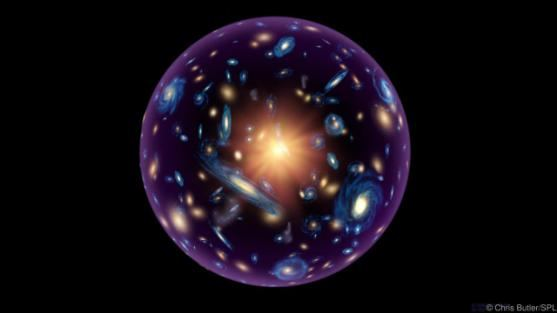
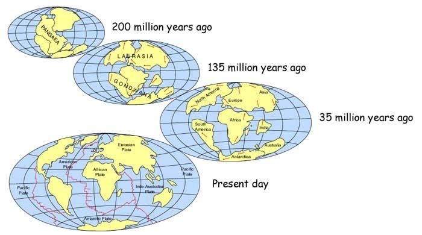

In the reviving initial universe, the Land of Judgment will form, and the Judgment will be carried out:
পুনরুজ্জীবিত প্রাথমিক মহাবিশ্বে, বিচারের ভূমি গঠিত হবে, এবং বিচার সম্পন্ন হবে:
―And not they honored Allah—true honor—while the Land (the Land of Judgment) is assembling in His hand on the Day of Resurrection; and the Skies (Samawaat / this Universe) rolled-up in His right hand. Glory be to Him! And high is He above what they associate.‖ [Al Quran 39: 67]
- এবং তারা আল্লাহকে সম্মান করেনি - প্রকৃত সম্মান - যখন ভূমি (বিচারের দেশ) কেয়ামতের দিন তাঁর হাতে সমবেত হবে; এবং আকাশ (সামাওয়াত / এই মহাবিশ্ব) তার ডান হাতে গড়িয়েছে। তিনি পবিত্র! এবং তারা যাকে শরীক করে তিনি তার উর্ধ্বে।” [আল কুরআন 39:67]
But scientists with differing theories do not find a point of Final Judgment and Salvation, as the verses suggest: "Woe to the falsehood-mongers—those who heedless in a flood of confusion—they ask, "When will be the Day of Judgment and Justice?"" FIGURE 51.1: Point of Final Judgment
চিত্র 51_1 / Figure 51_1
কিন্তু ভিন্ন ভিন্ন তত্ত্বের সাথে বিজ্ঞানীরা চূড়ান্ত বিচার এবং পরিত্রাণের একটি বিন্দু খুঁজে পান না, যেমন আয়াতগুলি পরামর্শ দেয়: "ধিক্ মিথ্যাবাদীদের জন্য - যারা বিভ্রান্তির বন্যায় গাফিলতি করে - তারা জিজ্ঞাসা করে, "বিচার ও ন্যায়বিচারের দিন কখন হবে?" " চিত্র 51.1: চূড়ান্ত বিচারের বিন্দু
চিত্র 51_1 / Figure 51_1
The Quran clearly indicates the Point of Final Judgment: the present universe (2nd Cycle) will collapse and revive. The first day (the next Day of Law) of the reviving universe will be the Day of Judgment, and it will be an extreme Day: ―A Day when they will be tried over the Fire!‖
কুরআন স্পষ্টভাবে চূড়ান্ত বিচারের বিন্দু নির্দেশ করে: বর্তমান মহাবিশ্ব (২য় চক্র) ভেঙে পড়বে এবং পুনরুজ্জীবিত হবে। পুনরুজ্জীবিত মহাবিশ্বের প্রথম দিন (পরের আইনের দিন) হবে বিচারের দিন, এবং এটি হবে একটি চরম দিন: "যেদিন তাদের আগুনের উপর পরীক্ষা করা হবে!"
As to the Guards, they will be in the midst of Jannaat and springs; taking joy in the things, which their Lord gives them, because before then they lived a good life. They were in the habit of sleeping but little by night, and in the hours of early dawn they were praying for forgiveness. And in their wealth and possessions was the right of him who asked, and him who was prevented (from asking). Section 3 of Chapter 51 [Verse 20-23]: The Quran
রক্ষীদের হিসাবে, তারা জান্নাত ও ঝর্ণার মাঝখানে থাকবে; তাদের পালনকর্তা তাদের যা দেন তাতে আনন্দ পান, কারণ এর আগে তারা ভাল জীবনযাপন করত। তাদের ঘুমানোর অভ্যাস ছিল কিন্তু রাত্রে অল্প অল্প করে, এবং ভোরবেলা তারা ক্ষমা প্রার্থনা করত। আর তাদের ধন-সম্পদ ও ধন-সম্পদে দাবিকারীর এবং যাকে (চাইতে) বাধা দেওয়া হয়েছিল তার অধিকার ছিল। অধ্যায় 51 এর অধ্যায় 3 [আয়াত 20-23]: কুরআন
On the Earth are signs for those of assured Faith, as also in your own-selves; will ye not then see? And in the Sky is your sustenance as that which ye are promised. Then, by the Lord of the ‗Sky and Land‘ this is the very Truth, as what you speak.
নিশ্চিত বিশ্বাসীদের জন্য পৃথিবীতে নিদর্শন রয়েছে, তোমাদের নিজেদের মধ্যেও। তোমরা কি দেখবে না? আর আসমানেই রয়েছে তোমাদের রিযিক যা তোমাদেরকে ওয়াদা করা হয়েছে। অতঃপর, 'আকাশ ও জমিনের' প্রভুর কসম, এটিই সত্য, যেমন আপনি বলছেন।
Segment-2 Guidance is given
সেগমেন্ট-2 নির্দেশিকা দেওয়া হয়
Has the story reached thee of the honored guests of Abraham? Behold, they entered his presence and said: "Peace!" He said, "Peace, people unknown." Then he turned quickly to his household, brought out a fatted calf, and placed it before them. He said, "Will ye not eat?" He conceived a fear of them. They said, "Fear not" and they gave him glad tidings of a son endowed with knowledge. But his wife came forward aloud; she smote her forehead and said: "A barren old woman!" They said, "Even so, has thy Lord spoken, and He is full of Wisdom and Knowledge." Section 5 of Chapter 51 [Verse 31-37]: People of Lut
ইবরাহীমের সম্মানিত মেহমানদের ঘটনা কি আপনার কাছে পৌঁছেছে? দেখ, তারা তাঁর সামনে প্রবেশ করল এবং বললঃ শান্তি! তিনি বললেন, শান্তি, অচেনা মানুষ। তারপর তিনি দ্রুত তার পরিবারের দিকে ফিরে গেলেন, একটি মোটাতাজা বাছুর বের করে তাদের সামনে রাখলেন। তিনি বললেন, তোমরা কি খাবে না? তিনি তাদের সম্পর্কে একটি ভয় কল্পনা করেছিলেন। তারা বলল, "ভয় করো না" এবং তারা তাকে জ্ঞানী পুত্রের সুসংবাদ দিল। কিন্তু তার স্ত্রী জোরে এগিয়ে এল; সে তার কপালে আঘাত করে বলল: "একজন বন্ধ্যা বুড়ি!" তারা বলল, আপনার পালনকর্তা এমনি কথা বলেছেন এবং তিনি প্রজ্ঞা ও জ্ঞানে পরিপূর্ণ। অধ্যায় 51 [আয়াত 31-37] এর 5 ধারা: লুত সম্প্রদায়
(Abraham) Said: "And what, O ye Messengers (angels), is your errand?" They said, "We have been sent to a people in sin to bring on on them stones of clay, marked as from thy Lord for those who trespass beyond bounds." Then We evacuated those of the Believers who were there, but We found not there any just persons except in one house. And We left there a sign for such as fear the Grievous Penalty.
(ইব্রাহীম) বললেনঃ হে রসূলগণ, তোমাদের কাজ কি? তারা বলল, আমরা এমন এক সম্প্রদায়ের কাছে প্রেরিত হয়েছি যারা পাপ করে তাদের উপর মাটির পাথর চাপিয়ে দেয়, যা আপনার পালনকর্তার পক্ষ থেকে সীমা অতিক্রমকারীদের জন্য চিহ্নিত করা হয়েছে। অতঃপর আমরা মুমিনদের মধ্যে যারা সেখানে ছিল তাদেরকে বের করে দিলাম, কিন্তু সেখানে একটি ঘর ছাড়া আর কোন ন্যায়পরায়ণ ব্যক্তিকে পেলাম না। আর আমরা সেখানে একটি নিদর্শন রেখে গেলাম যাদের জন্য ভয়ানক শাস্তির ভয়।
And in Moses: Behold, We sent him to Pharaoh with authority manifest, but turned back with his chiefs and said, "A sorcerer or one possessed!" So, We took him and his forces and threw them into the sea, and his was the blame.
এবং মূসার মধ্যে: দেখ, আমরা তাকে সুস্পষ্ট কর্তৃত্ব সহ ফেরাউনের কাছে পাঠিয়েছিলাম, কিন্তু তার সর্দারদের নিয়ে ফিরে গিয়েছিলাম এবং বলেছিলাম, একজন যাদুকর বা ধনসম্পদ! অতঃপর আমরা তাকে ও তার বাহিনীকে ধরে সমুদ্রে নিক্ষেপ করেছিলাম এবং তারই দোষ ছিল।
And in the 'Ad, behold, We sent against them the devastating wind. It left nothing whatever that it came up against but reduced it to ruin and rottenness. And in the Thamud, behold, they were told, "Enjoy for a little while!" But they insolently defied the command of their Lord. So, the stunning noise seized them, even while they were looking on. Then they could not even stand, nor could they help themselves. So, were the people of Noah before them, for they wickedly transgressed.
আর ‘আদ’-এ দেখ, আমি তাদের বিরুদ্ধে বিধ্বংসী বায়ু প্রেরণ করেছি। এটি যা কিছুর বিরুদ্ধে এসেছিল তা কিছুই রেখে যায়নি বরং এটিকে ধ্বংস এবং পচে পরিণত করেছে। আর সামুদে, দেখ, তাদেরকে বলা হয়েছিল, কিছুক্ষণের জন্য উপভোগ কর! কিন্তু তারা তাদের পালনকর্তার আদেশ অমান্য করে। সুতরাং, অত্যাশ্চর্য গোলমাল তাদের জব্দ করেছিল, এমনকি তারা তাকিয়ে ছিল। তখন তারা দাঁড়াতেও পারল না, নিজেদেরও সাহায্য করতে পারল না। তাদের আগেও নূহের সম্প্রদায় ছিল, কারণ তারা পাপাচার করেছিল।
Segment-3 Aim of Creation
সেগমেন্ট-3 সৃষ্টির লক্ষ্য
And the Sky, We constructed it with hands (bi-aydin), and, indeed, We are surely are Expanders.
আর আকাশ, আমরা একে হাতে তৈরি করেছি (বাই-আয়দিন), এবং আমরা অবশ্যই সম্প্রসারণকারী।
In the 1920s, Edwin Hubble observed that galaxies were moving away from us. He conducted his experiment on many galaxies in different directions and at various distances, and found that all distant galaxies were receding.
1920 এর দশকে, এডউইন হাবল পর্যবেক্ষণ করেছিলেন যে ছায়াপথগুলি আমাদের থেকে দূরে সরে যাচ্ছে। তিনি বিভিন্ন দিকে এবং বিভিন্ন দূরত্বে অনেক গ্যালাক্সির উপর তার পরীক্ষা চালিয়েছিলেন এবং দেখতে পান যে সমস্ত দূরবর্তী ছায়াপথগুলি হ্রাস পাচ্ছে।
FIGURE 51.2: The Expansion

চিত্র 51_2 / Figure 51_2
চিত্র 51.2: সম্প্রসারণ
চিত্র 51_2 / Figure 51_2
The recession velocity of a galaxy is directly proportional to its distance: the farther away a galaxy is, the faster it moves away. This discovery proves that the universe is expanding. In 1998, scientists observed that the expansion of the universe had been accelerating for the last five billion years. This observation revealed the presence of hidden energy (dark energy) in space, which was causing the acceleration. Otherwise, a universe organized as Seven Skies would require extra energy to expand. In the verse under discussion, the energy of expansion is described as the force of His hands (hand of nafs): ―And the Sky, We constructed it with hands, and indeed We are surely are Expanders.‖ The space of the universe is created by the hand (the hand of nafs) of Allah. This hand comprises several force fields (elementary souls/ruhs), such as gravitational force, vacuum energy, quantum fields, dark energy, and more. Dark energy drives the expansion of the universe. His hands of nafs are deliberately discussed in Section-1 of Chapter-1. The hand is discussed in Section- 2 of Chapter-45 as well.
একটি ছায়াপথের মন্দা বেগ সরাসরি তার দূরত্বের সমানুপাতিক: একটি ছায়াপথ যত দূরে থাকে, তত দ্রুত দূরে সরে যায়। এই আবিষ্কার প্রমাণ করে যে মহাবিশ্ব সম্প্রসারিত হচ্ছে। 1998 সালে, বিজ্ঞানীরা পর্যবেক্ষণ করেছিলেন যে মহাবিশ্বের সম্প্রসারণ গত পাঁচ বিলিয়ন বছর ধরে ত্বরান্বিত হয়েছে। এই পর্যবেক্ষণ মহাকাশে লুকানো শক্তির (অন্ধকার শক্তি) উপস্থিতি প্রকাশ করেছিল, যা ত্বরণের কারণ ছিল। অন্যথায়, সাত আকাশ হিসাবে সংগঠিত একটি মহাবিশ্বের প্রসারণের জন্য অতিরিক্ত শক্তির প্রয়োজন হবে। আলোচ্য আয়াতে, সম্প্রসারণের শক্তিকে তাঁর হাতের (নফসের হাত) বল হিসাবে বর্ণনা করা হয়েছে: "আর আকাশ, আমরা এটি হাতে তৈরি করেছি, এবং আমরা অবশ্যই সম্প্রসারণকারী।" মহাবিশ্বের মহাকাশ আল্লাহর হাত (নফসের হাত) দ্বারা সৃষ্ট। এই হাতটি বিভিন্ন বল ক্ষেত্র (প্রাথমিক আত্মা/রুহ) নিয়ে গঠিত, যেমন মহাকর্ষীয় বল, ভ্যাকুয়াম শক্তি, কোয়ান্টাম ক্ষেত্র, অন্ধকার শক্তি এবং আরও অনেক কিছু। ডার্ক এনার্জি মহাবিশ্বের সম্প্রসারণকে চালিত করে। তার হাতের নফসের কথা পরিকল্পিতভাবে অধ্যায়-১ এর ধারা-১ এ আলোচনা করা হয়েছে। হাতটি অধ্যায়-45-এর ধারা- 2-এও আলোচনা করা হয়েছে।
And We have spread out the Earth; how excellently We do spread out!
আর আমি পৃথিবীকে বিস্তৃত করেছি; আমরা কত চমৎকারভাবে ছড়িয়ে দিই!
The land of the Earth has been shaped by the spreading of the continents through Plate Tectonics. FIGURE 51.3: Drifting Continents

চিত্র 51_3 / Figure 51_3
প্লেট টেকটোনিক্সের মাধ্যমে মহাদেশগুলি ছড়িয়ে পড়ার ফলে পৃথিবীর ভূমির আকার হয়েছে। চিত্র 51.3: প্রবাহিত মহাদেশ
চিত্র 51_3 / Figure 51_3
And in everything We have created pairs (double helix DNA molecules) that ye may receive instruction.
আর সবকিছুতেই আমরা জোড়া (ডাবল হেলিক্স ডিএনএ অণু) সৃষ্টি করেছি যাতে তোমরা নির্দেশ পেতে পার।